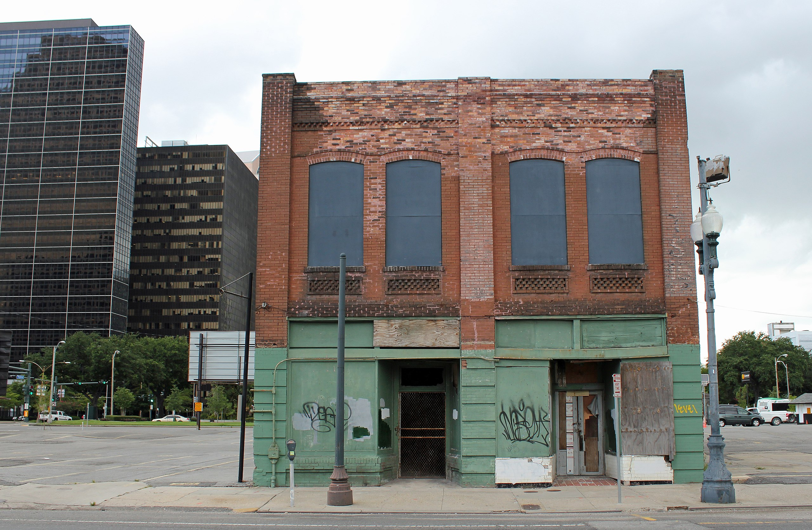
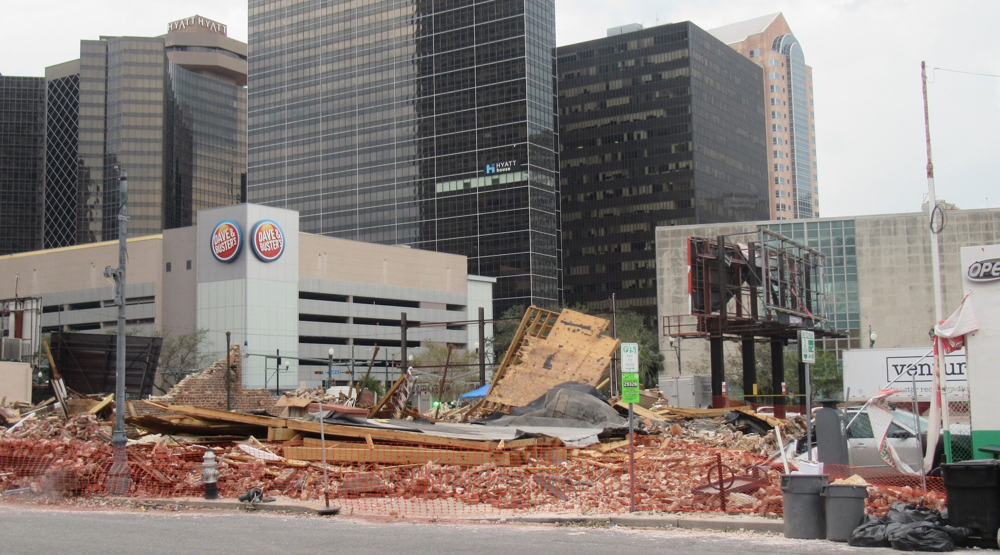
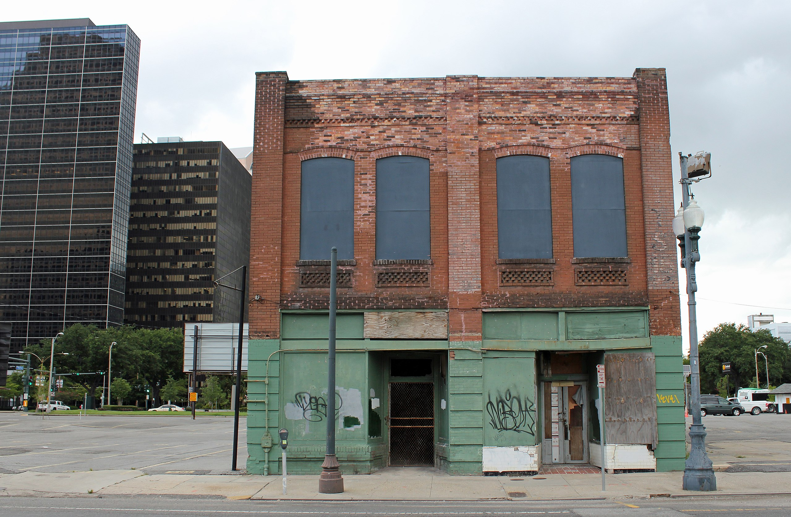
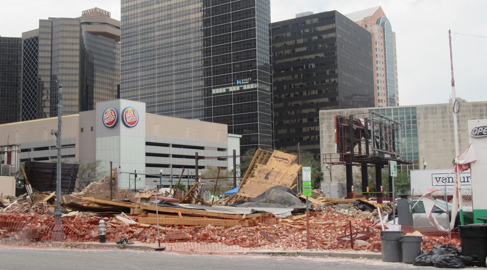

Historical sites at risk of being destroyed by climate disasters
By Julia Ingram April 10, 2022
New York's Ellis Island was submerged closed for a year after Hurricane Sandy caused surges of water to flood the island home to the Statue of Liberty. Damage from the storm caused $77 million to repair, and a massive hit in revenue and wave of layoffs from the company that ferries tourists to the island.
Hurricane Sandy coincided with an above average tide in the Atlantic Ocean, but sea levels in the New York area have risen a foot since 1950, according to National Oceanic and Atmospheric Administration data, a recipe for worse coastal flooding. In anticipation of future storms augmented by climate change, the National Park Service’s (NPS) repairs in 2013 included elevating the island's electrical systems further above sea level. Efforts to repair environmental damage are still ongoing: in 2020, the NPS granted a $30.8 million contract to stabilize and repair the eroding seawall surrounding the island and its ferry slip.
Now, over 16,500 sites — including Ellis Island and the Statue of Liberty — or roughly 18% of those listed on the National Register of Historic Places, are in the path of potential climate change disasters, according to an analysis of data published by the National Register and the Federal Emergency Management Agency (FEMA).
FEMA provides a designation for the risk level of counties and census tracts to face 18 national hazards, from wildfires to hurricanes to tornados, as well as an overall risk score, called the National Risk Index. The National Risk Index for each hazard and for a county or census tract overall is calculated according to the expected annual loss a community might face by a climate event, its social vulnerability and expected resilience.
To be listed on the National Register of Historic Places, a building, site, or district must meet a set of criteria to deem them worthy of preservation, as well as potential tax incentive for their maintenance.
Proactive efforts to preserve historic sites will be needed, activists and scientists say. Efforts to protect sites from potential climate-caused damage have not begun in many places, a 2014 report by the Union of Concerned Scientists examining 30 historic sites found.
Some sites have, the study found, like Ellis Island, which continues those efforts today, and the Cape Hatteras Lighthouse in the Outer Banks of North Carolina — all 4,800 tons of which was physically relocated further inland to protect it from coastal flooding.
Other places are taking more creative approaches to historic preservation. In St. Augustine, Florida, which faces rising tides and has spent millions on preventing floods, the NPS is partnering with the University of Florida's Center for Digital Heritage to replicate historic sites in a virtual reality setting, NPR reported.
 



Photo credit (in the order they appear): National Register of Historic Places Digital Archive, Ian Bornarth (California Department of Parks and Recreation), Wikimedia Commons, Alan Smason (Jewish Telegraphic Agency)
This story was done for Data Studio, a class in the Columbia Journalism School. To view the source code and read more about the project, visit the GitHub repository here.